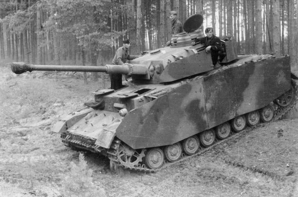

PANZERKAMPFWAGEN IV
Informacije o vozilu:
| Specifikacija | Detalji |
|---|---|
| Naziv | Panzer IV |
| Tip | Srednji tenk (25 tona) |
| Uveden u uporabu | 1939. godine |
| Naoružanje | 75 mm KwK 40 L/48 glavni top i 2-3 × 7,92 mm Maschinengewehr 34 strojnica |
| Oklop | 30 do 80 mm |
| Brzina | 40 km/h |
| Posada | 5 članova |
Vrh njemačke kopnene vojske nadao se da će u II. svjetski rat krenuti s oklopnim postrojbama naoružanim tenkovima Panzerkampfwagen III i Panzerkampfwagen IV. No, Hitlerova je agresivna vanjska politika uzrokovala početak rata četiri godine prije nego što je to prvotno planirano. Zbog toga su oklopne postrojbe koje su napale Poljsku uglavnom bile opremljene tenkovima Panzerkampfwagen I i Panzerkampfwagen II. Iako je Panzerkampfwagen IV bio treći po brojnosti, činio je tek 7% oklopnih snaga (1,445 Panzerkampfwagena I, 1,223 Panzerkampfwagena II i samo 211 Panzerkampfwagena IV). Zbog promašene politike naoružavanja poljska je vojska imala još manje tenkova koji su tehnički bili inferiorni njemačkim.
Britanski Crusader tenk prolazi pored zapaljenog Panzera IV tijekom "Operation Crusader"